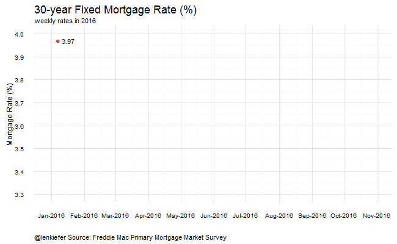
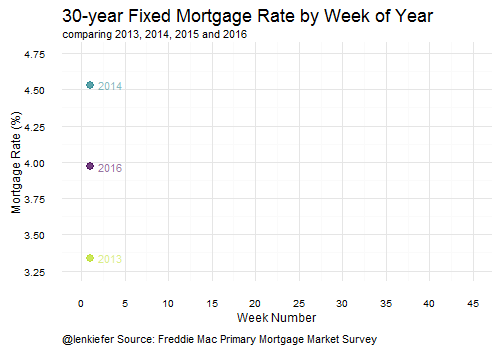

A couple of views of mortgage rates:
Mortgage Rates in 2016
This chart shows the weekly average for the 30-year fixed rate morrtgage.

Comparing mortgage rates by week
This viz compares weekly mortgage rates (30-year fixed rate mortgage) by year. Each line represents a different year. The x-axis display the week of the year (from 1 to 52).

Homeownership gif
A homeownership rate viz. This shows the U.S. homeownership rate and breaks it out by the age of householder:

JOLTS
Let’s look at job openings and hires data from the Bureau of Labor Statistics Job Openings and Labor Turnover Survey (JOLTS).
The first graph compares job openings to hires for the total private sector. Job openings declined by 388,000 in the latest data.

This next graph compares job openings and hires for the construction sector. Construction job openings have surged lately, but hiring has not: